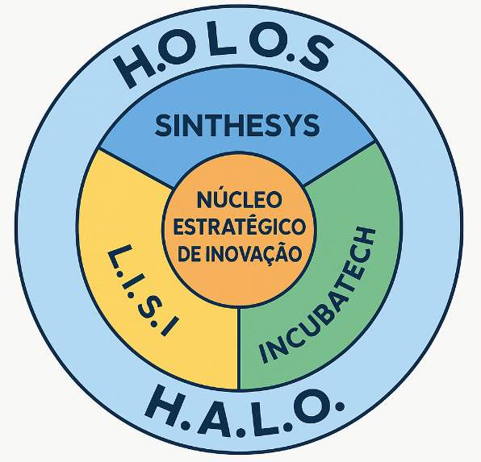
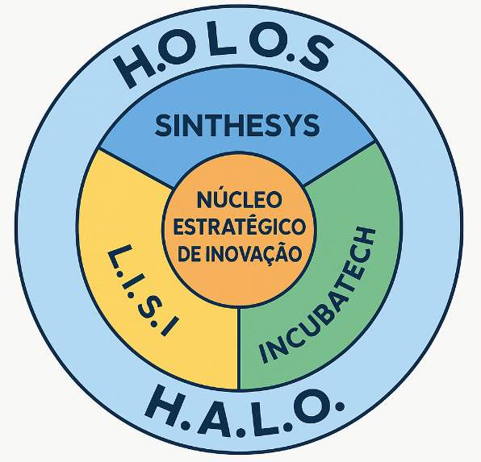

Instituto de Formação e Tecnologia
Presente no Futuro
O IFT é uma organização sem fins lucrativos, que mantém intercâmbio com instituições nacionais e internacionais nas áreas altamente especializadas. Seus principais objetivos são:
Promover e executar a gestão de projetos e pesquisas em assuntos culturais e tecnológicos, como biotecnologia, agronegócio, energias limpas e saúde.
Mediar e efetuar a transferência tecnológica entre universidades, institutos, empresas estatais e privadas, centros de ensino e outras entidades afins.
Promover o desenvolvimento cultural e tecnológico brasileiro por meio de cursos de formação, especialização e intercâmbio científico.
Realizar consultorias em todos os assuntos ligados aos objetivos do Instituto, com soluções práticas, inovadoras e com responsabilidade social.
Áreas estratégicas de atuação:
LINKS DO ECOSSISTEMA TECHSOL
 
